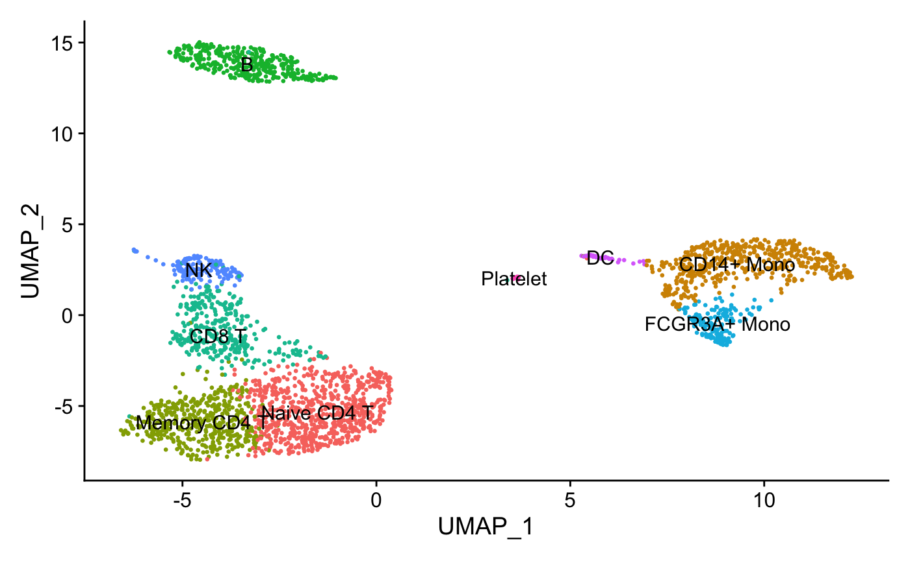
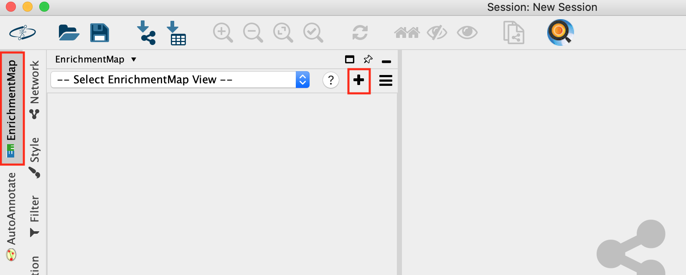
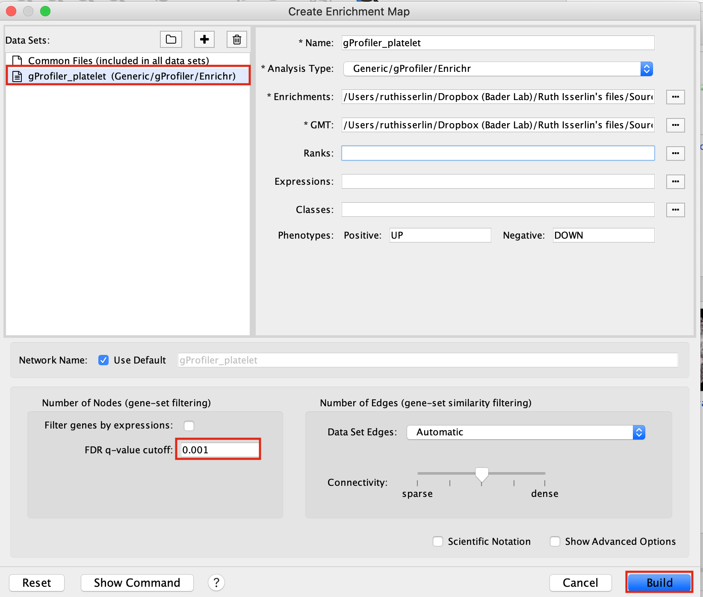
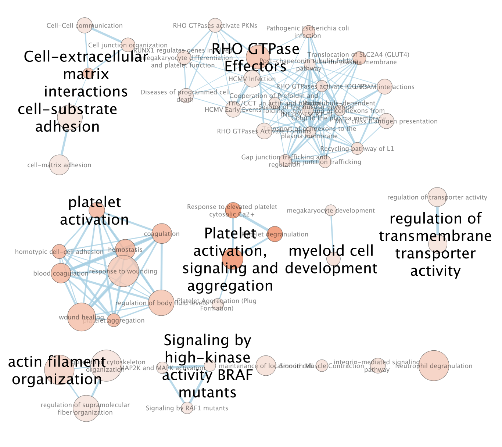
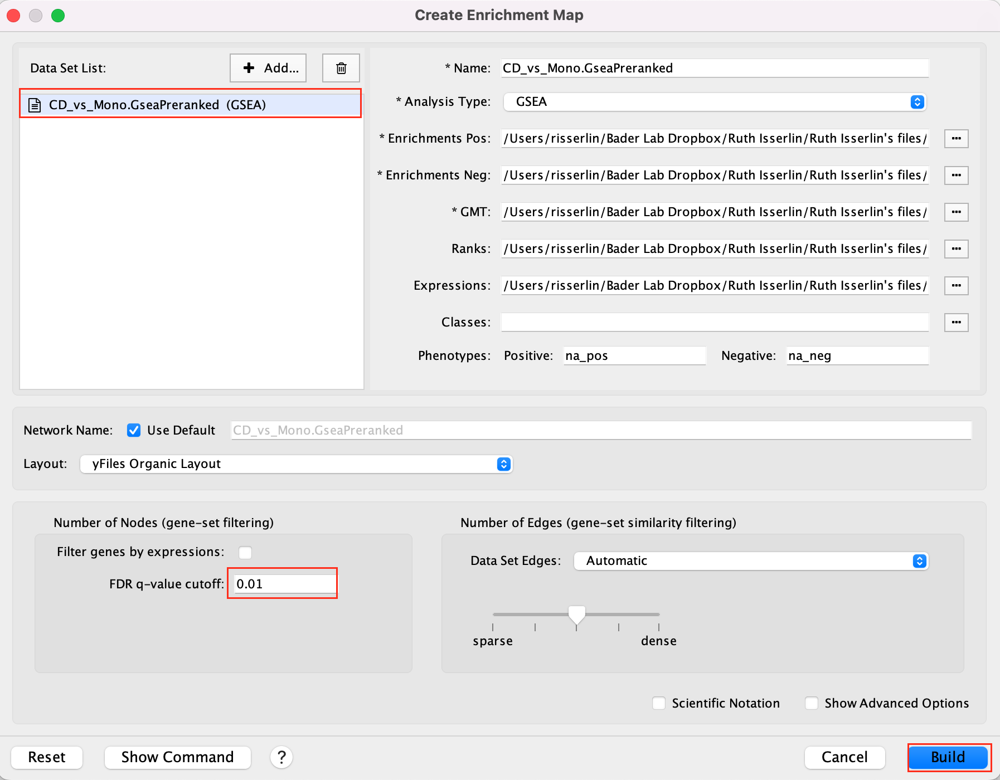
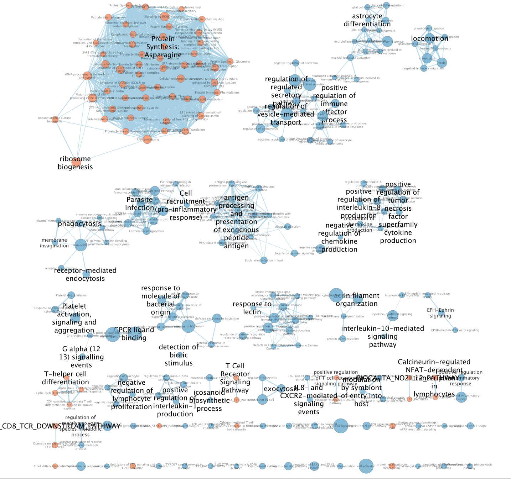

Module 6 lab 1: scRNA PBMC
This work is licensed under a Creative Commons Attribution-ShareAlike 3.0 Unported License. This means that you are able to copy, share and modify the work, as long as the result is distributed under the same license.
By Veronique Voisin, Chaitra Sarathy and Ruth Isserlin
Introduction
As an example of applying pathway and network analysis using single cell RNASeq, we are using the Seurat tutorial as starting point. This dataset consists of Peripheral Blood Mononuclear Cells (PBMC) and is a freely available dataset from 10X Genomics. There are 2,700 single cells that have been sequenced on the Illumina NextSeq 500 (https://satijalab.org/seurat/articles/pbmc3k_tutorial.html).
Pmbc3k Seurat Pipeline
The R code in this practical lab was used to produce the gene lists to use in the downstream analysis. It is for your reference.
YOU DON’T NEED TO RUN IT FOR THIS PRACTICAL LAB.
ALL NECESSARY FILES ARE PROVIDED.
Process the dataset
This is basic processing steps for the purpose of this practical lab. Please look at external tutorials to process scRNA. For example, pre-processing can include methods to remove doublets and ambient RNA. This is out of scope for this meeting.
pbmc[["percent.mt"]] <- PercentageFeatureSet(pbmc, pattern = "^MT-")
pbmc <- NormalizeData(pbmc, normalization.method = "LogNormalize",
scale.factor = 10000)
pbmc <- NormalizeData(pbmc)
pbmc <- FindVariableFeatures(pbmc, selection.method = "vst",
nfeatures = 2000)
all.genes <- rownames(pbmc)
pbmc <- ScaleData(pbmc, features = all.genes)
pbmc <- RunPCA(pbmc, features = VariableFeatures(object = pbmc))
pbmc <- FindNeighbors(pbmc, dims = 1:10)
pbmc <- FindClusters(pbmc, resolution = 0.5)
pbmc <- RunUMAP(pbmc, dims = 1:10)
DimPlot(pbmc, reduction = "umap")
Assign cell type identity to clusters
For this dataset, we use canonical markers to match clusters to known cell types:
new.cluster.ids <- c("Naive CD4 T", "CD14+ Mono",
"Memory CD4 T", "B", "CD8 T",
"FCGR3A+ Mono","NK", "DC", "Platelet")
names(new.cluster.ids) <- levels(pbmc)
pbmc <- RenameIdents(pbmc, new.cluster.ids)
DimPlot(pbmc, reduction = "umap", label = TRUE, pt.size = 0.5)
+ NoLegend()
Find differentially expressed features (cluster biomarkers)
Find markers for every cluster compared to the remaining cells and report only the genes with positive scores, ie. genes specific to the cluster and not the rest of the cells. The list of genes specific to each cluster will be used in the downstream analysis.
#Use the FindAllMarkers seurat function to find all the genes
#associated with each cluster
pbmc.markers <- FindAllMarkers(pbmc, only.pos = TRUE, min.pct = 0.25,
logfc.threshold = 0.25)
pbmc.markers %>%
group_by(cluster) %>%
slice_max(n = 2, order_by = avg_log2FC)
#plot graphs for a subset of the genes
FeaturePlot(pbmc, features = c("MS4A1", "GNLY", "CD3E",
"CD14", "FCER1A", "FCGR3A", "LYZ", "PPBP","CD8A"))
write.csv(pbmc.markers, "pbmc.markers.csv")
Create Gene list for each cluster to use with g:Profiler
Now that we have the list of genes that are specific to each cluster, it would be useful to perform pathway analysis on each list. It could provide a deeper understanding on each cluster. In some cases, it might help to adjust the labels associated with the clusters using marker genes.
In order to do that, we have extracted each cluster gene list from the pbmc.markers.csv file.
#modify the names of some of the clusters to get rid of spaces and symbols
pbmc.markers$cluster = gsub("Naive CD4 T", "Naive_CD4_T",
pbmc.markers$cluster)
pbmc.markers$cluster = gsub("CD14\\+ Mono", "CD14pMono",
pbmc.markers$cluster)
pbmc.markers$cluster = gsub("Memory CD4 T", "Memory_CD4_T",
pbmc.markers$cluster)
pbmc.markers$cluster = gsub("CD8 T", "CD8_T", pbmc.markers$cluster)
pbmc.markers$cluster = gsub("FCGR3A\\+ Mono", "FCGR3Ap_Mono",
pbmc.markers$cluster)
#get the set of unique cluster names
cluster_list = unique(pbmc.markers$cluster)
#go through each cluster and create a file of its associated genes.
# output the genes associated with each cluster into a file named by the
# cluster name
for (a in cluster_list){
print(a)
genelist = pbmc.markers$gene[which( pbmc.markers$cluster == a)]
print(genelist)
write.table(genelist, paste0(a, ".txt"), sep= "\t", col.names = F,
row.names = F, quote=F)
}Run pathway enrichment analysis using g:Profiler
For this practical lab, we will use the platelet gene list to enriched pathways and processes using g:Profiler.
- Open the g:Profiler website at g:Profiler in your web browser.
- Open the file (Platelet.txt) in a simple text editor such as Notepad or Textedit. Select and copy the list of genes.
- Paste the gene list into the Query field in top-left corner of the g:Profiler interface.
- Click on the Advanced options tab to expand it.
- Set Significance threshold to “Benjamini-Hochberg FDR”
- Select 0.05
- Click on the Data sources tab to expand it:
- UnSelect all gene-set databases by clicking the “clear all” button.
- In the Gene Ontology category, check GO Biological Process and No electronic GO annotations.
- In the biological pathways category, check Reactome and check WikiPathways.
- Click on the Run query button to run g:Profiler.

- Save the results
- In the Detailed Results panel, select “GEM” .
- keep the minimum term size set to 10
- set maximum term size to 500
- This will save the results in a text file in the “Generic Enrichment Map” format that we will use to visualize in Cytoscape.

- Download the pathway database files.
- Go to the top of the page and expand the “Data sources” tab. Click on the ‘combined name.gmt’ link located at bottom of this tab. It will download a file named combined name.gmt containing a pathway database gmt file with all the available sources.
- Rename the file to gProfiler_platelet.txt
Create an enrichment map in Cytoscape
- Open Cytoscape
- Go to Apps -> EnrichmentMap
- Select the EnrichmentMap and click on the + sign to open the app.
 - Drag and drop the g:Profiler file (gProfiler_platelet.txt) and the gmt file (gprofiler_full_hsapiens.name.gmt)
- Set FDR q-value cutoff to 0.001
- Click on Build
 - An enrichment map is created:
 - For clarity, you can use the AutoAnnotate app to annotate and cluster the enrichment map.
- In Cytoscape menu , go to Apps,–> AutoAnnotate,–> New Annotation Set…
- A dialog box opens, click on OK

The boxes Palette, Scale Font by cluster size and Word Wrap have been selected. The clusters have been moved around for clarity.
You might have a slightly different network as the notebook might have been prepared using a previous version of g:Profiler. g:Profiler updates its databases regularly. Archived databases can be retrieved here: https://biit.cs.ut.ee/gprofiler/page/archives.
GSEA from pseudobulk
pseudobulk creation, differential expression and rank file
We also can create pseudobulk data from the scRNA data by summing all cells into defined groups. We used the clusters to group the cells and we calculate differential expression using edgeR. We compare the CD4 cells (Naive CD4 T and Memory CD4 T) and the monocytic cells (CD14+ Mono and “FCGR3A+ Mono) .
As shown in module 3, in order to perform pathway analysis,we prepare a rank file, run GSEA and create an enrichment map in Cytoscape.
- Data:
- rank file: CD4vsMono.rnk
- gmt file: Human_GOBP_AllPathways_no_GO_iea_April_02_2023_symbol.gmt
run GSEA:
- Open GSEA
- Select Load Data
- Drag and Drop the rank CD4vsMono.rnk and gmt * Human_GOBP_AllPathways_no_GO_iea_April_02_2023_symbol.gmt files.
- Click on Load these files
- Click on Run GSEAPreranked
- In Gene sets database, click on the 3 dots, select Local GMX/GMT , select the gmt file, click on OK.
- Set the Number of permutations to 100
- Select the rank file: CD4vsMono.rnk
- Expand Basic Fields
- In the field Collapse/Remap to gene symbols, select No_Collapse
- Add an analysis name of your choice
- Set Max size to 200 and Min size to 10.
- Click on Run

Use 2000 permutations and MAX_Size to 1000 for your own analysis. You can decide to further reduce MAX_Size to 500 or 200.
Create an EnrichmentMap:
- Open Cytoscape
- Go to Apps -> EnrichmentMap
- Select the EnrichmentMap tab, click on the + sign. A Create Enrichment Map windows pops up.
- Drag and drop the GSEA folder in the Data Sets window. It automatically populates the fields.
- Set the FDR q-value cutoff to 0.01
- Click on Build

- The enrichment map is now created. The red nodes are pathways enriched in genes up-regulated in CD4 cells when compared to the monocytic cells. The blue nodes are pathways enriched in genes up-regulated in monocytic cells.

See code below for your reference ( pseudobulk, differential expression and rank file).
library(dplyr)
library(Seurat)
library(patchwork)
library(ggplot2)
library(AUCell)
library(RColorBrewer)
library(scuttle)
library(SingleCellExperiment)
library(edgeR)
library(affy)
names(new.cluster.ids) <- levels(pbmc)
pbmc <- RenameIdents(pbmc, new.cluster.ids)
counts <- pbmc@assays$RNA@counts
metadata <- pbmc@meta.data
sce <- SingleCellExperiment(assays = list(counts = counts), colData = metadata)
sum_by <- c("seurat_clusters")
summed <- scuttle::aggregateAcrossCells(sce, id=colData(sce)[,sum_by])
raw <- assay(summed, "counts")
colnames(raw) = c("Naive_CD4_T", "CD14p_Mono", "Memory_CD4_T", "B", "CD8_T",
"FCGR3Ap_Mono","NK", "DC", "Platelet")
saveRDS(raw, "raw.rds")
count_mx = as.matrix(raw)
myGroups = c("CD4","Mono" ,"CD4","B" , "CD8_T","Mono","NK", "DC","Platelet" )
y <- DGEList(counts=count_mx,group=factor(myGroups))
keep <- filterByExpr(y)
y <- y[keep,keep.lib.sizes=FALSE]
y <- calcNormFactors(y)
design <- model.matrix(~0 + myGroups )
y <- estimateDisp(y,design)
my.contrasts <- makeContrasts(CD4vsMono=myGroupsCD4-myGroupsMono,
levels = design )
mycontrast = "CD4vsMono"
fit <- glmQLFit(y,design)
qlf <- glmQLFTest(fit,coef=2, contrast = my.contrasts[])
table2 = topTags(qlf, n = nrow(y))
table2 = table2$table
table2$score = sign(table2$logFC) * -log10(table2$PValue)
myrank = cbind.data.frame(rownames(table2), table2$score)
colnames(myrank) = c("gene", "score")
myrank = myrank[ order(myrank$score, decreasing = TRUE),]
write.table(myrank, paste0(mycontrast, ".rnk"), sep="\t", row.names = FALSE,
col.names = FALSE, quote = FALSE)Some methods like AddModuleScore or AUCell do pathway enrichment analysis of each of cells and the enrichment results are usually display on the UMAP using a color code. It involves R coding and is out of the scope for this workshop.